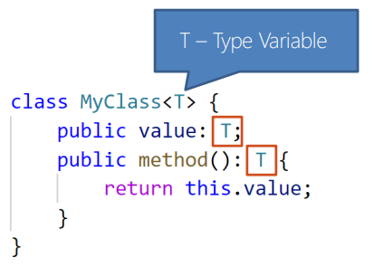

Уявіть величезний і дорогий, високотехнологічний друкарський друкарський верстат, виконаний у вигляді моноліту, що, своєю чергою, робить його придатним для друку тільки одного номера газети. Тобто для друку сьогоднішніх новин необхідний один друкарський верстат, для завтрашніх - інший і т.д. Подібний верстат можна порівняти зі звичайним типом, ознаки якого після оголошення залишаються незмінними при його реалізації. Інакше кажучи, якщо за існування типу A, опис якого містить поле, що належить до типу number, знадобиться тип, відмінність якого складатиметься лише в приналежності поля до іншого типу, виникне необхідність у його оголошенні.
Узагальнене програмування (Generic Programming) - це підхід, за якого алгоритми можуть однаково працювати з даними, що належать до різних типів даних, без зміни декларації (опису типу).
В основі узагальненого програмування лежить таке ключове поняття як узагальнення. Узагальнення (Generics) - це параметризований тип, що дає змогу оголошувати параметри типу, які є тимчасовою заміною конкретних типів, конкретизація яких буде виконана в момент створення екземпляра. Параметри типу, за умови дотримання деяких правил, можна використовувати в більшості операцій, що допускають роботу зі звичайними типами. Усе це разом дає привід порівнювати узагальнений тип із правильною версією друкарського верстата, чи заміні валу, призначеного для друкування інформації на папері, який проходить через них, можна порівняти з параметрами типу.
У реальності узагальнення дають змогу скорочувати кількість перетворень (приведень) і писати багаторазово використовуваний код, водночас підвищуючи його типобезпеку.
Цих прикладів має бути достатньо для утворення виразного образу узагальнень. Але, перш ніж продовжити, варто уточнити значення таких далеко не всім очевидних термінів, як - узагальнений тип, параметризований тип і універсальна конструкція.
Тип, що визначає параметр, позначається як узагальнений тип. Під час обговорення типів, що представляються параметрами типу, необхідно розуміти, що вони визначені в параметризованому типі. Коли оголошення узагальненого типу отримало реалізацію, то таку конструкцію, чи то клас, чи то функція, називають універсальною (універсальний клас, універсальна функція або метод).
Generic (узагальнений тип або шаблон) – спеціальний тип даних, який дозволяє створювати компоненти, не прив'язуючись до конкретного типу даних, а вказувати цей тип даних під час створення компонента
У TypeScript Generics можуть бути вказані для типів, що визначаються за допомогою:
Generics оголошуються за допомогою пари кутових дужок, у які через кому поміщено параметри типу, звані також типо-заповнювачами
або універсальними параметрами Type<T0, T1>
Параметри типу можуть бути вказані як тип скрізь, де потрібна анотація типу. Область видимості параметрів типу
обмежена областю узагальненого типу. Усі входження параметрів типу будуть замінені на конкретні типи, передані
як аргументи типу. Аргументи типу вказуються в кутових дужках, в яких через кому вказуються конкретні типи даних
Type<number, string>.
Ідентифікатори параметрів типу повинні починатися з великої літери і, крім фантазії розробника, вони також обмежені загальними для TypeScript правилами. Якщо логічну приналежність параметра типу можна встановити без жодних зусиль, як, наприклад, у випадку Array<T>, який кричить, що параметр типу T представляє тип, до якого можуть належати елементи цього масиву, то ідентифікатори параметрів типу заведено обирати з послідовності T, S, U, V і т. д. Також часта послідовність T, U, V, V, S тощо.
За допомогою K і V прийнято позначати типи, що відповідають Key/Value, а за допомогою P - Property. Ідентифікатором Z прийнято позначати поліморфний тип this.
Крім того, не виключені випадки, в яких краще виглядають повні імена, як, наприклад, RequestService, ResponseService, до яких ще можна застосувати Угорську нотацію - TRequestService, TResponseService.
Наприклад, побачивши в автодоповненні редактора тип Array<T>, на думку одразу спадає правильний варіант, що масив міститиме елементи, які належать до зазначеного типу T. Але, побачивши Animal<T, S>, можна ніколи не здогадатися, що ці типи даних будуть вказані в анотації типу полів id і arial. У цьому випадку було б набагато краще дати імена Animal<AnimalID, AnimalArial> або навіть Animal<TAnimalID, TAnimalArial>, що дасть змогу всередині тіла параметризованого типу Animal відрізняти його параметри типу від конкретних оголошень.
У разі, коли узагальнення вказано псевдоніму типу (type), область видимості параметрів типу обмежена самим виразом.
Область видимості параметрів типу при оголошенні функції та функціонального виразу, включно зі стрілочним, а також методів, обмежується їхньою сигнатурою і тілом. Іншими словами, параметр типу можна використовувати як тип при оголошенні параметрів, значення, що повертається, а також у допустимих виразах (анотація типу, приведення типу тощо), розташованих у тілі.